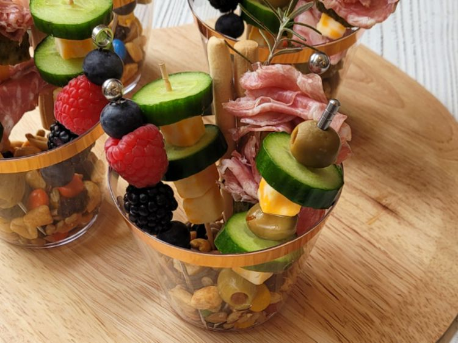

Charcuterie Cups

Charcuterie Cups
Single serving charcuterie cups are great for a small family appetizer,
watching a movie, or wine out by the fire.
A variety of meat, olives, cheese, and berries are arranged on individual extra long toothpicks,
and set into cups with trail mix and breadsticks.
Ingredients
- 4 (9-ounce) disposable cups
- 16 extra long toothpicks
- 6 ounces sweet and salty trail mix
- 8 blueberries
- 4 raspberries
- 4 blackberries
- 12 pimiento-stuffed olives
- 1 mini cucumber, cut into 16 slices
- 2 ounces sliced rustico salami
- 1 kosher dill pickle, cut into 8 slices
- 8 breadsticks
- 4 rosemary sprigs (optional)
Directions
- Divide trail mix evenly into 4 (9-ounce) disposable cups.
- Thread 1 blueberry, 1 raspberry, 1 blackberry, and 1 blueberry onto each of 4 toothpicks.
- Thread 1 olive, 1 cucumber slice, 1 cheese cube, 1 olive, 1 cucumber slice, 1 cheese cube, and 1 olive onto each of 4 toothpicks.
- Thread 1 cucumber slice, 1 cheese cube, 1 cucumber slice, and 2 cheese cubes onto each of 4 toothpicks.
- Thread ¼ ounce rustico salami, 1 pickle slice, 1 cheese cube, ¼ ounce rustico salami, 1 pickle slice, 1 cheese cube onto each of 4 toothpicks.
- Arrange 1 toothpick from each set of 4 in cups; add 2 breadsticks to each cup. Garnish with rosemary sprigs.